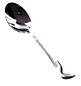
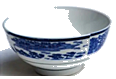
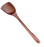
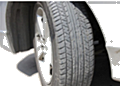
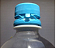
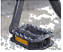
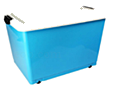
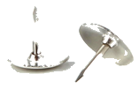

2021年北京市中考物理试题 · 选择题 第1、2、3、4、5题 · 对应解析
1．作为国际通用测量语言的国际单位制，极大地方便了国际交流。在国际单位制中，质量的单位是（ ）
A．千克B．牛顿C．焦耳D．瓦特
【分析】质量的国际单位是千克，符号是kg。
【解答】解：A、千克是质量的国际单位，故A正确。
B、牛顿是力的国际单位，故B错误。
C、焦耳是能量的国际单位，故C错误。
D、瓦特是功率的国际单位，故D错误。
故选：A。
【点评】物理学中各个物理量都有自己的符号和国际单位，不要将各符号和各单位相互混淆。
2．下列四种用电器中，利用电流热效应工作的是（ ）
A．电冰箱B．电视机C．电脑D．电热水壶
【分析】当电流通过电阻时，电流做功而消耗电能，产生了热量，这种现象叫做电流的热效应。根据各用电器的能量转化可做出判断。
【解答】解：电冰箱在工作时，电能主要转化为机械能；电视机、电脑在工作时，主要将电能转化为光能和声能；
电热水壶将电能转化为热能，是利用电流的热效应，故D正确。
故选：D。
【点评】本题主要考查了电流的热效应、电能和其它形式能的相互转化，是一道基础题。
3．如图所示的四种用品中，通常情况下属于导体的是（ ）
A．

金属勺B．
瓷碗C．塑料盒D．

木铲【分析】从定义上看，善于导电的物体叫导体，不善于导电的物体叫绝缘体。
【解答】解：在通常情况下瓷碗、塑料盒、木铲都不善于导电，是绝缘体，金属勺是由金属材料制成的，属于是导体。
故选：A。
【点评】了解生活中常见的物体哪些是导体，哪些是绝缘体，有一定的现实意义。
4．如图所示的四个实例中，为了减小摩擦的是（ ）
A．

汽车轮胎上刻有花纹B．
瓶盖上刻有竖条纹C．

脚蹬面做得凹凸不平D．
储物箱下装有滚轮【分析】（1）增大摩擦力的方法：在接触面粗糙程度一定时，通过增大压力来增大摩擦力；在压力一定时，通过增大接触面的粗糙程度来增大摩擦力。
（2）减小摩擦力的方法：在接触面粗糙程度一定时，通过减小压力来减小摩擦力；在压力一定时，通过减小接触面的粗糙程度来减小摩擦力；使接触面脱离；用滚动摩擦代替滑动摩擦。
【解答】解：ABC、汽车轮胎上刻有花纹、瓶盖上刻有条纹、脚蹬面做得凹凸不平，是在压力一定时，增大接触面的粗糙程度来增大摩擦力，故ABC不符合题意；
D、储物箱下装有滚轮，是用滚动代替滑动减小摩擦力，故D符合题意。
故选：D。
【点评】本题在考查影响滑动摩擦力大小的两个因素的同时，也考查了学生运用所学知识分析实际问题的能力，要求学生在生活中多注意观察，并学会应用，增大有益摩擦，减小有害摩擦，使其更好地为人类服务。
5．如图所示的四个实例中，为了增大压强的是（ ）
A．饮料管的一端剪成斜口B．在铁轨下面铺枕木
C．书包背带做得较宽D．

图钉帽的面积做得较大【分析】①压强大小跟压力大小和受力面积大小有关。
②增大压强的方法：在压力一定时，减小受力面积来增大压强；在受力面积一定时，增大压力来增大压强。
③减小压强的方法：在压力一定时，增大受力面积来减小压强；在受力面积一定时，减小压力来减小压强。
【解答】解：
A、饮料管的一端剪成斜口，是在压力一定时，通过减小受力面积来增大压强的，故A正确；
BCD、在铁轨下面铺枕木、书包背带做得较宽、图钉帽的面积做得较大，是在压力一定时，通过增大受力面积来减小压强的，故BCD错误。
故选：A。
【点评】掌握压强大小的影响因素，掌握增大和减小压强的方法，并能在生活中加以应用，体现了理论和实践相结合。